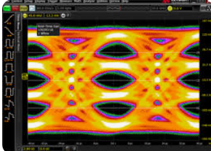
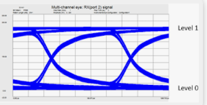

Image 1 reveals several signal integrity issues, including inter-symbol interference (ISI) from overlapping traces, jitter from horizontal spreading, and amplitude noise from vertical fluctuations. These impairments can degrade data reliability and performance. To improve signal quality, it's recommended to apply equalization techniques like FFE and DFE, enhance clock recovery to reduce jitter, use low-loss materials and optimized PCB layouts to minimize channel degradation, and implement signal conditioning methods such as pre-emphasis or de-emphasis. Additionally, maintaining clean power delivery with proper decoupling can help reduce amplitude noise and stabilize the signal. Image 2 The eye diagram showing overlapping blue waveform traces that form the characteristic multi-level "eye" shapes. The eye openings are partially closed, indicating the presence of timing jitter, inter-symbol interference (ISI), and voltage noise. These impairments reduce the clarity of the signal transitions and can lead to higher bit error rates. To improve signal integrity, it's recommended to apply equalization techniques, optimize transmitter settings, and refine PCB layout to reduce reflections and crosstalk. Additionally, ensuring clean power delivery and minimizing ground bounce will help stabilize the signal levels. Image 3 show partially closed eye openings, indicating signal degradation primarily due to inter-symbol interference (ISI) and jitter. ISI causes overlapping between symbols, while jitter leads to horizontal spreading of signal transitions, both of which reduce the clarity of the eye openings. To enhance signal integrity, it's recommended to optimize equalization settings to counteract ISI, implement robust clock recovery techniques to minimize jitter, and ensure proper termination and impedance matching in the transmission path to reduce reflections and crosstalk. Image 4 The eye openings are symmetrical but exhibit noticeable overlap and reduced vertical eye height, suggesting amplitude noise and crosstalk, in addition to previously observed inter-symbol interference (ISI) and jitter. These impairments can degrade signal clarity and increase bit error rates. To improve signal quality, it's recommended to apply advanced equalization techniques (e.g., CTLE, DFE), enhance shielding and PCB layout to reduce crosstalk, and fine-tune transmitter settings such as pre-emphasis and swing levels. Ensuring clean power delivery and minimizing ground bounce can also help stabilize amplitude levels. Image 5 The signal quality is affected by inter-symbol interference (ISI), timing jitter, amplitude noise, and crosstalk, resulting in partially closed eye openings and reduced vertical eye height. These impairments are typical in high-speed serial links like PCIe Gen 6 and can lead to increased bit error rates. To improve signal integrity, it's recommended to apply advanced equalization techniques (e.g., CTLE, DFE), optimize transmitter settings (pre-emphasis, swing levels), enhance clock recovery, and refine PCB layout to minimize reflections and coupling. Additionally, ensuring clean power delivery, proper termination, and impedance matching will help stabilize the signal and open the eyes for better performance. Image 6 The eye openings are moderately closed, pointing to timing jitter, voltage noise, and inter-symbol interference (ISI). The red and blue regions suggest frequent transitions and potential instability in signal levels. To improve signal quality, it's recommended to enhance equalization, optimize transmitter settings, and refine PCB layout to reduce reflections and crosstalk. Additionally, improving power integrity and minimizing ground bounce can help stabilize voltage levels and widen the eye openings. Image 7 The eye openings are somewhat compromised, showing signs of timing jitter, voltage noise, and possible ISI. The red and yellow regions suggest frequent transitions and potential instability in signal levels. To improve signal integrity, it's recommended to refine equalization settings, enhance clock recovery, and optimize PCB design to reduce coupling and reflections. Additionally, improving power delivery and reducing ground bounce can help stabilize voltage levels and widen the eye openings. Image 8 While it features symmetrical, interwoven curves in yellow and orange, it lacks the distinct horizontal and vertical axes, eye openings, and transition density typically used to assess signal integrity in high-speed digital communication. Therefore, it’s not suitable for analyzing noise types or making signal improvement recommendations in the context of PCIe Gen 6 PAM4. Image 9 The eye openings are not fully clear, suggesting the presence of timing jitter, amplitude noise, and possibly crosstalk. The red and yellow regions highlight areas of frequent signal transitions, which may be contributing to eye closure. To improve signal integrity, it's advisable to enhance equalization, reduce jitter through better clock recovery, and optimize PCB layout to minimize coupling and reflections. Additionally, signal conditioning techniques like pre-emphasis and de-emphasis can help restore eye clarity. Image 10 The eye diagram showing overlapping blue waveform traces that form the characteristic multi-level "eye" shapes. The eye openings are partially closed, indicating the presence of timing jitter, inter-symbol interference (ISI), and voltage noise. These impairments reduce the clarity of the signal transitions and can lead to higher bit error rates. To improve signal integrity, it's recommended to apply equalization techniques, optimize transmitter settings, and refine PCB layout to reduce reflections and crosstalk. Additionally, ensuring clean power delivery and minimizing ground bounce will help stabilize the signal levels. Image 11 reveals several signal integrity issues, including inter-symbol interference (ISI) from overlapping traces, jitter from horizontal spreading, and amplitude noise from vertical fluctuations. These impairments can degrade data reliability and performance. To improve signal quality, it's recommended to apply equalization techniques like FFE and DFE, enhance clock recovery to reduce jitter, use low-loss materials and optimized PCB layouts to minimize channel degradation, and implement signal conditioning methods such as pre-emphasis or de-emphasis. Additionally, maintaining clean power delivery with proper decoupling can help reduce amplitude noise and stabilize the signal. Image 12 The eye diagram showing overlapping blue waveform traces that form the characteristic multi-level "eye" shapes. The eye openings are partially closed, indicating the presence of timing jitter, inter-symbol interference (ISI), and voltage noise. These impairments reduce the clarity of the signal transitions and can lead to higher bit error rates. To improve signal integrity, it's recommended to apply equalization techniques, optimize transmitter settings, and refine PCB layout to reduce reflections and crosstalk. Additionally, ensuring clean power delivery and minimizing ground bounce will help stabilize the signal levels. Image 13 show partially closed eye openings, indicating signal degradation primarily due to inter-symbol interference (ISI) and jitter. ISI causes overlapping between symbols, while jitter leads to horizontal spreading of signal transitions, both of which reduce the clarity of the eye openings. To enhance signal integrity, it's recommended to optimize equalization settings to counteract ISI, implement robust clock recovery techniques to minimize jitter, and ensure proper termination and impedance matching in the transmission path to reduce reflections and crosstalk. Image 14 The eye openings are symmetrical but exhibit noticeable overlap and reduced vertical eye height, suggesting amplitude noise and crosstalk, in addition to previously observed inter-symbol interference (ISI) and jitter. These impairments can degrade signal clarity and increase bit error rates. To improve signal quality, it's recommended to apply advanced equalization techniques (e.g., CTLE, DFE), enhance shielding and PCB layout to reduce crosstalk, and fine-tune transmitter settings such as pre-emphasis and swing levels. Ensuring clean power delivery and minimizing ground bounce can also help stabilize amplitude levels. Image 15 The signal quality is affected by inter-symbol interference (ISI), timing jitter, amplitude noise, and crosstalk, resulting in partially closed eye openings and reduced vertical eye height. These impairments are typical in high-speed serial links like PCIe Gen 6 and can lead to increased bit error rates. To improve signal integrity, it's recommended to apply advanced equalization techniques (e.g., CTLE, DFE), optimize transmitter settings (pre-emphasis, swing levels), enhance clock recovery, and refine PCB layout to minimize reflections and coupling. Additionally, ensuring clean power delivery, proper termination, and impedance matching will help stabilize the signal and open the eyes for better performance. Image 16 The eye openings are moderately closed, pointing to timing jitter, voltage noise, and inter-symbol interference (ISI). The red and blue regions suggest frequent transitions and potential instability in signal levels. To improve signal quality, it's recommended to enhance equalization, optimize transmitter settings, and refine PCB layout to reduce reflections and crosstalk. Additionally, improving power integrity and minimizing ground bounce can help stabilize voltage levels and widen the eye openings. Image 17 The eye openings are somewhat compromised, showing signs of timing jitter, voltage noise, and possible ISI. The red and yellow regions suggest frequent transitions and potential instability in signal levels. To improve signal integrity, it's recommended to refine equalization settings, enhance clock recovery, and optimize PCB design to reduce coupling and reflections. Additionally, improving power delivery and reducing ground bounce can help stabilize voltage levels and widen the eye openings. Image 18 While it features symmetrical, interwoven curves in yellow and orange, it lacks the distinct horizontal and vertical axes, eye openings, and transition density typically used to assess signal integrity in high-speed digital communication. Therefore, it’s not suitable for analyzing noise types or making signal improvement recommendations in the context of PCIe Gen 6 PAM4. Image 19 The eye openings are not fully clear, suggesting the presence of timing jitter, amplitude noise, and possibly crosstalk. The red and yellow regions highlight areas of frequent signal transitions, which may be contributing to eye closure. To improve signal integrity, it's advisable to enhance equalization, reduce jitter through better clock recovery, and optimize PCB layout to minimize coupling and reflections. Additionally, signal conditioning techniques like pre-emphasis and de-emphasis can help restore eye clarity. Image 20 The eye diagram showing overlapping blue waveform traces that form the characteristic multi-level "eye" shapes. The eye openings are partially closed, indicating the presence of timing jitter, inter-symbol interference (ISI), and voltage noise. These impairments reduce the clarity of the signal transitions and can lead to higher bit error rates. To improve signal integrity, it's recommended to apply equalization techniques, optimize transmitter settings, and refine PCB layout to reduce reflections and crosstalk. Additionally, ensuring clean power delivery and minimizing ground bounce will help stabilize the signal levels. Image 21 reveals several signal integrity issues, including inter-symbol interference (ISI) from overlapping traces, jitter from horizontal spreading, and amplitude noise from vertical fluctuations. These impairments can degrade data reliability and performance. To improve signal quality, it's recommended to apply equalization techniques like FFE and DFE, enhance clock recovery to reduce jitter, use low-loss materials and optimized PCB layouts to minimize channel degradation, and implement signal conditioning methods such as pre-emphasis or de-emphasis. Additionally, maintaining clean power delivery with proper decoupling can help reduce amplitude noise and stabilize the signal. Image 22 The eye diagram showing overlapping blue waveform traces that form the characteristic multi-level "eye" shapes. The eye openings are partially closed, indicating the presence of timing jitter, inter-symbol interference (ISI), and voltage noise. These impairments reduce the clarity of the signal transitions and can lead to higher bit error rates. To improve signal integrity, it's recommended to apply equalization techniques, optimize transmitter settings, and refine PCB layout to reduce reflections and crosstalk. Additionally, ensuring clean power delivery and minimizing ground bounce will help stabilize the signal levels. Image 23 show partially closed eye openings, indicating signal degradation primarily due to inter-symbol interference (ISI) and jitter. ISI causes overlapping between symbols, while jitter leads to horizontal spreading of signal transitions, both of which reduce the clarity of the eye openings. To enhance signal integrity, it's recommended to optimize equalization settings to counteract ISI, implement robust clock recovery techniques to minimize jitter, and ensure proper termination and impedance matching in the transmission path to reduce reflections and crosstalk. Image 24 The eye openings are symmetrical but exhibit noticeable overlap and reduced vertical eye height, suggesting amplitude noise and crosstalk, in addition to previously observed inter-symbol interference (ISI) and jitter. These impairments can degrade signal clarity and increase bit error rates. To improve signal quality, it's recommended to apply advanced equalization techniques (e.g., CTLE, DFE), enhance shielding and PCB layout to reduce crosstalk, and fine-tune transmitter settings such as pre-emphasis and swing levels. Ensuring clean power delivery and minimizing ground bounce can also help stabilize amplitude levels. Image 25 The eye openings are not fully clear, suggesting the presence of timing jitter, amplitude noise, and possibly crosstalk. The red and yellow regions highlight areas of frequent signal transitions, which may be contributing to eye closure. To improve signal integrity, it's advisable to enhance equalization, reduce jitter through better clock recovery, and optimize PCB layout to minimize coupling and reflections. Additionally, signal conditioning techniques like pre-emphasis and de-emphasis can help restore eye clarity. Image 26 The eye openings are somewhat compromised, showing signs of timing jitter, voltage noise, and possible ISI. The red and yellow regions suggest frequent transitions and potential instability in signal levels. To improve signal integrity, it's recommended to refine equalization settings, enhance clock recovery, and optimize PCB design to reduce coupling and reflections. Additionally, improving power delivery and reducing ground bounce can help stabilize voltage levels and widen the eye openings. Image 27 The eye openings are moderately closed, pointing to timing jitter, voltage noise, and inter-symbol interference (ISI). The red and blue regions suggest frequent transitions and potential instability in signal levels. To improve signal quality, it's recommended to enhance equalization, optimize transmitter settings, and refine PCB layout to reduce reflections and crosstalk. Additionally, improving power integrity and minimizing ground bounce can help stabilize voltage levels and widen the eye openings. Image 28 While it features symmetrical, interwoven curves in yellow and orange, it lacks the distinct horizontal and vertical axes, eye openings, and transition density typically used to assess signal integrity in high-speed digital communication. Therefore, it’s not suitable for analyzing noise types or making signal improvement recommendations in the context of PCIe Gen 6 PAM4. Image 29 The signal quality is affected by inter-symbol interference (ISI), timing jitter, amplitude noise, and crosstalk, resulting in partially closed eye openings and reduced vertical eye height. These impairments are typical in high-speed serial links like PCIe Gen 6 and can lead to increased bit error rates. To improve signal integrity, it's recommended to apply advanced equalization techniques (e.g., CTLE, DFE), optimize transmitter settings (pre-emphasis, swing levels), enhance clock recovery, and refine PCB layout to minimize reflections and coupling. Additionally, ensuring clean power delivery, proper termination, and impedance matching will help stabilize the signal and open the eyes for better performance. Image 30 The eye diagram presents a perfect PCIe Gen 6 PAM4 eye diagram, characterized by three distinct, symmetrical, and wide-open eye patterns that indicate excellent signal integrity. The clarity and uniformity of the eye openings suggest minimal jitter, noise, and inter-symbol interference (ISI), confirming that the transmission channel is well-optimized for high-speed data communication. Such a pristine eye diagram reflects ideal conditions for PAM4 signaling, ensuring reliable bit separation and low error rates—critical for PCIe Gen 6 performance. This serves as a benchmark example of a well-engineered high-speed link.